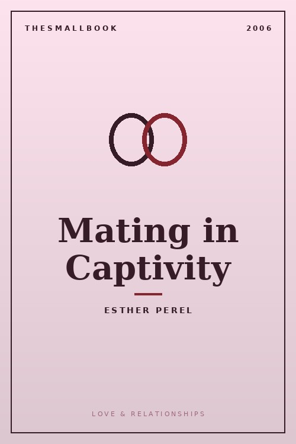

Why Did Playboy and the Empire the Internet Retired Fail?
The Empire the Internet Retired
What happened
Playboy began in 1953 with 51,000 dollars and a Marilyn Monroe centrefold, and became one of the twentieth century's most recognisable brands: a magazine that mixed nude photography with serious fiction and interviews, clubs, a mansion, and a philosophy that made Hugh Hefner famous. Circulation peaked above 7 million in the 1970s. Then the environment it had pioneered turned on it: cable, home video and finally free internet content destroyed the scarcity the magazine sold, while its brand licensing, bunny logos on merchandise in Asia, quietly became the real business. Print advertising collapsed, the magazine cut frequency, removed and then restored nudity in confused strategy swings, and in 2017, weeks after Hugh Hefner's death at 91, the controlling shareholder moved to take the company private and end the regular print edition, which expired for good in 2020. Playboy did not lose an argument about morality. It lost its distribution monopoly on a product the internet made free, and never found a second engine as strong as the first.
The fatal mistake
Playboy mistook a distribution advantage for a permanent brand right. When scarcity ended, the company had no answer to why a reader should pay, and its responses oscillated: chasing respectability by removing nudity in 2016, then reversing in 2017, which read as strategy by weather vane. It was slow and ambivalent about the internet, the very force in its own image, while licensing the logo so widely that the brand meant everything and nothing. Most of all it remained a founder's personality cult: succession, governance and reinvention all waited on one man's mansion, and when he died the empire was revealed as a licensing annuity wearing a magazine as a costume.
The lesson
When your product becomes free, you are not in that product's business any more, whatever the masthead says. Brand licensing can pay the bills while quietly hollowing the brand; count what the logo still means, not just what it earns. Strategy reversals in public are taxes on trust; decide what you are before the market decides for you. And personality cults are unhedged positions: a company that cannot be imagined without its founder has not finished becoming a company.
The antidote book

Love seeks closeness. Desire needs distance. The art of a long relationship is holding both at once.
READ THE SUMMARY OPEN INTERACTIVE BOOKQuestions people ask about Playboy and the Empire the Internet Retired
Why did Playboy and the Empire the Internet Retired fail? Playboy mistook a distribution advantage for a permanent brand right. When scarcity ended, the company had no answer to why a reader should pay, and its responses oscillated: chasing respectability by removing nudity in 2016, then reversing in 2017, which read as strategy by weather vane. It was slow and ambivalent about the internet, the very force in its own image, while licensing the logo so widely that the brand meant everything and nothing. Most of all it remained a founder's personality cult: succession, governance and reinvention all waited on one man's mansion, and when he died the empire was revealed as a licensing annuity wearing a magazine as a costume.
How much was lost? A 7 million circulation empire ended as a licensing logo
What is the lesson? When your product becomes free, you are not in that product's business any more, whatever the masthead says. Brand licensing can pay the bills while quietly hollowing the brand; count what the logo still means, not just what it earns. Strategy reversals in public are taxes on trust; decide what you are before the market decides for you. And personality cults are unhedged positions: a company that cannot be imagined without its founder has not finished becoming a company.
Playboy and the Empire the Internet Retired kyun fail hua? In simple English: Playboy mistook a distribution advantage for a permanent brand right. When scarcity ended, the company had no answer to why a reader should pay, and its responses oscillated: chasing respectability by removing nudity in 2016, then reversing in 2017, which... The cost was A 7 million circulation empire ended as a licensing logo.
Keep digging
More fame and fortune failures · Open the full Graveyard
Read the antidote book summary: Mating in Captivity
Related failures
- Why did Yeezy fail? 2022 · One Month of Statements Turned a $1.5 Billion Partnership Into a Write-Off
- Why did Rana Kapoor fail? 2020 · 'Diamonds Are Forever' - Loans Weren't
- Why did Q Magazine fail? 2020 · The music monthly closes
- Why did V.G. Siddhartha fail? 2019 · The Coffee King Who Carried It Alone
- Why did Johnny Depp fail? 2017 · $30,000 a Month on Wine
- Why did Harvey Weinstein and the System That Protected Him fail? 2017 · The Open Secret With an Office
They paid full price. You get the lesson in simple English.